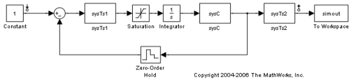
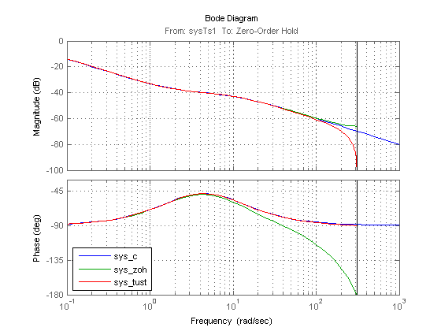

Linearization Using Different Rate Conversion Methods
Contents
Simulink® Control Design™ offers the ability to specify the rate conversion method for the linearization of a multirate model. The choice of rate conversion methodology can affect the resulting linearized model. This demo illustrates the extraction of a discrete linear time invariant model using two different rate conversion methods.
Example Problem
In the Simulink® model scdmrate.mdl there are three different sample rates specified in five blocks. These blocks are
- sysC - a continuous linear block,
- Integrator - a continuous integrator,
- sysTs1 - a block that has a sample time of 0.01 seconds,
- sysTs2 - a block that has a sample time of 0.025 seconds, and
- Zero-Order Hold - a block that samples the incoming signal at 0.01 seconds.
Open the Simulink model
scdmrate
In this example, you linearize the model between the output of the block sysTs1 and the block Zero-Order Hold. Additionally, you add a loop opening at the block Zero-Order Hold to extract the plant model for the system.
model = 'scdmrate'; io(1) = linio('scdmrate/sysTs1',1,'in'); io(2) = linio('scdmrate/Zero-Order Hold',1,'out','on');
Using these linearization points the linearization effectively results in the linearization of the model scdmrate_ol.
scdmrate_ol

When linearizing a model that contains both continuous and discrete signals, the software first converts the continuous signals to discrete signals, using a rate conversion method. The default rate conversion method is zero-order hold. To view or change the rate conversion method, use the RateConversionMethod property in the linoptions function. The following command shows that RateConversionMethod is set to the default setting, zoh:
opt = linoptions
Options for LINEARIZE:
LinearizationAlgorithm : blockbyblock
SampleTime (-1 Auto Detect) : -1
UseFullBlockNameLabels (on/off): off
UseBusSignalLabels (on/off): off
Options for 'blockbyblock' algorithm
BlockReduction (on/off) : on
IgnoreDiscreteStates (on/off) : off
RateConversionMethod (zoh/tustin/prewarp/ : zoh
upsampling_zoh/
upsampling_tustin/
upsampling_prewarp
PreWarpFreq : 10
UseExactDelayModel : off
Options for 'numericalpert' algorithm
NumericalPertRel : 1.000000e-005
NumericalXPert : []
NumericalUPert : []
Options for FINDOP:
OptimizationOptions : [1x1 struct]
OptimizerType : graddescent_elim
DisplayReport (on/iter/off): on
The following command performs a linearization using the zero-order hold method. Because the linearization includes the Zero-Order Hold block, the sample time of the linearization is 0.01.
sys_zoh = linearize(model,io,opt);
The following commands change the rate conversion method to the Tustin (Bilinear transformation) method and then linearize using this method. The sample time of this linearized model is also 0.01.
opt.RateConversionMethod = 'tustin';
sys_tust = linearize(model,io,opt);
It is also possible to create a continuous-time linearized model by specifying the sample time as 0 in the options object. The rate conversion method still creates a discrete-time linearized model but then converts the discrete-time model to a continuous-time model.
opt.SampleTime = 0; sys_c = linearize(model,io,opt);
The Bode plots for the three linearizations show the effects of the two rate conversion methods. In this example, the Tustin rate conversion method gives the most accurate representation of the phase response of the continuous system and the zero-order hold gives the best match to the magnitude response.
p = bodeoptions('cstprefs'); p.YLimMode = {'manual'}; p.YLim = {[-100 0];[-180 -30]}; p.Grid = 'on'; bodeplot(sys_c,sys_zoh,sys_tust,p); h = legend('sys_c','sys_zoh','sys_tust','Location','SouthWest'); set(h,'Interpreter','none')